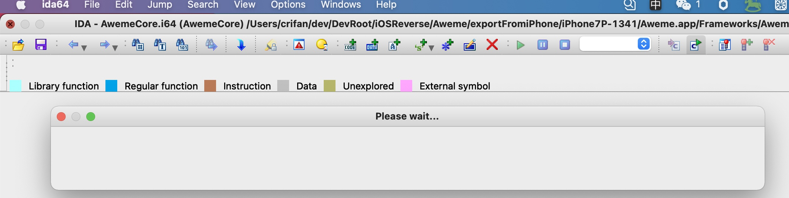
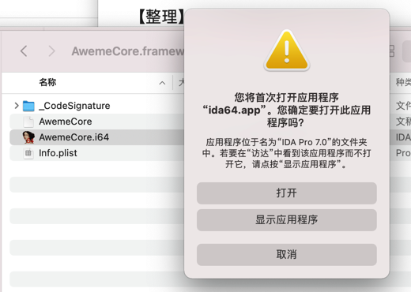
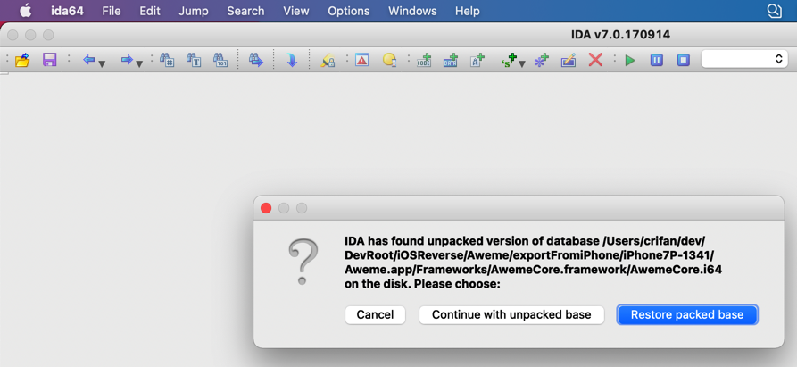
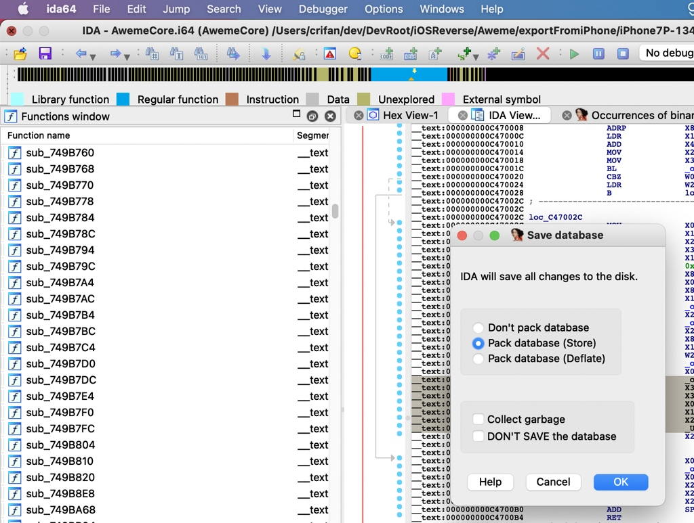
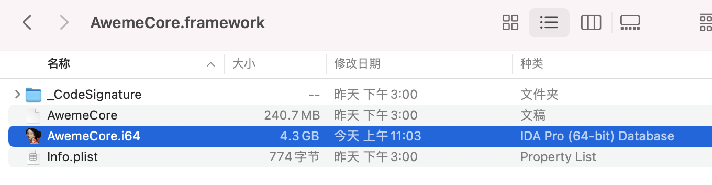
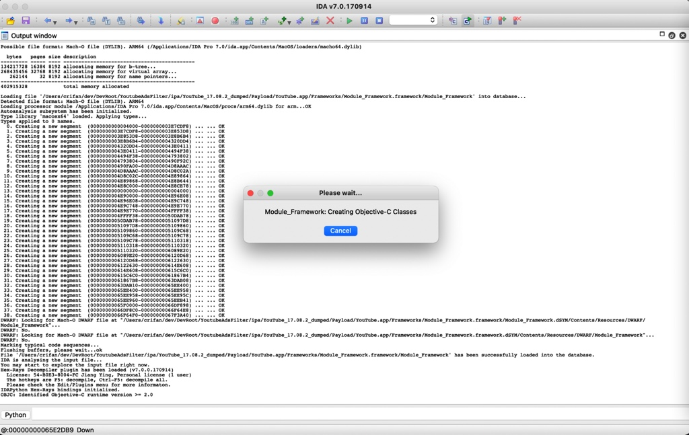
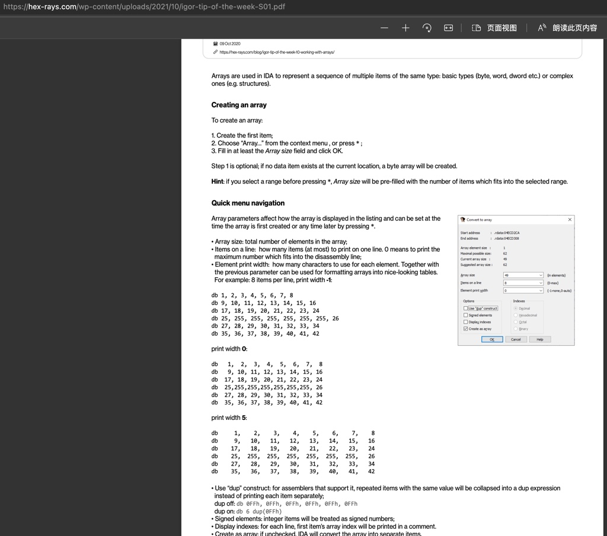

IDA使用心得
TODO：
- 【记录】IDA Pro使用记录
- 【已解决】IDA中View-A中如何方便的选择并拷贝汇编代码
- 【未解决】IDA反编译的伪代码有错误如何修改改动
- 【未解决】IDA调试iPhone中的iOS的app
- 【已解决】自己Mac中恢复IDA开发环境
- 【已解决】Mac Big Sur中运行ida64.app报错：您没有权限来打开应用程序
- 【已解决】Mac Big Sur中正常运行IDA Pro中的ida.app
- 函数调用图
- 【记录】研究YouTube广告视频请求相关函数：sub_3B8318C
- 【无需解决】自己Mac打开ida64的文件提示IDA Pro已过期
- 【iOS逆向心得】IDA使用心得：伪代码中在修改了别处函数定义后返回导致伪代码中函数调用参数丢失
- 【整理】iOS逆向心得：IDA Pro使用心得：给函数改名便于快速定位汇编伪代码对应关系
- 【整理】IDA使用心得：通过给函数Set Item Type去修正函数的参数的个数和类型和返回值类型
- 【整理】iOS逆向心得：IDA使用心得：改变值的显示格式从10进制改为16进制查看Block的flags标志位
- 【整理】iOS逆向心得：IDA使用心得：修改变量类型Set Ivar Type后IDA可以自动解析结构体的属性和字段
- 【整理】IDA使用心得：根据selector跳转到函数
- Local Types 结构体 类定义
- 【已解决】IDA中如何给Local Types中struct MLServerABRLoader加上嵌入的struct结构体定义
- 【已解决】IDA中修改类的结构体定义报错：Failed to save the new type Probably some of its symbols are already used elsewhere
- 【已解决】IDA中如何指定Local Types中HAMDASHSampleBufferSource的bool属性_pendingSeek后偏移量是0x4
- 【无法解决】IDA尝试修改Structures中类型的属性的offset偏移量时弹框警告：Oops IDA has almost crashed
- 【已解决】IDA中类HAMDASHSampleBufferSource的属性解析出错：could not convert typeinfo failed to add null invalid type name
- 【已解决】IDA中Structures结构体定义中修改自定义类的属性的偏移量
- 【整理】IDA心得：自定义的类的属性偏移量和自动生成的偏移量不匹配
- 【整理】IDA使用心得：类的部分字段无法解析，导致伪代码中类的属性错误，需要手动修复结构体定义
- 【未解决】研究YouTube逻辑：补全MLServerABRLoader的字段属性偏移量对应关系
- 【记录】IDA中新增YouTube的CDStruct的相关结构体字段定义
- 【整理】IDA使用心得：跳转到历史列表的函数位置
- 【整理】IDA使用心得：给伪代码添加注释
- 【整理】IDA使用心得：伪代码中的可变参数个数的函数去增加或删除参数
- 【整理】IDA使用心得：伪代码中的指针+某个数值和0x开头LL结尾的数值不是一个意思
- 【已解决】IDA中伪代码含义：std basic_string char_traits allocator append
- 【整理】IDA使用心得：把类结构Structures的窗口放在右边方便对比查看
- 【整理】IDA使用心得：刷新当前已打开的伪代码用F5
- 【未解决】IDA使用心得：伪代码内新增变量
- 【已解决】IDA使用心得：如何修改设置函数结束位置
- 【整理】IDA使用心得：反编译伪代码有bug导致子函数调用丢失
- 【或许解决】IDA伪代码更改变量名等改动代码后切换回来改动丢失
使用IDA逆向分析和调试期间，有很多心得，整理如下，供参考。
打开和关闭
IDA，对于打开比较大（比如100多MB）的二进制的话：
- 打开：
- 首次打开：需要的解析时间很长
- 再次打开：也需要点时间（大概几十秒，根据已解析的数据库大小决定）
- 关闭：保存改动，写入数据库，也会耗时较长
- 所以在关闭时，要有耐心，等正常完成后自动关闭
- 
- 所以在关闭时，要有耐心，等正常完成后自动关闭
打开
双击.i64文件，可以调用IDA（中的ida64）去打开：

即可正常打开。
如果之前没有正常关闭，则会提示：
IDA has found unpacked version of database on the disk. Please choose:
- Cancel
- Continue with unpacked base
- Restore packed base
一般选：Restore packed base

即可。
关闭
去点击关闭时，一般会有提示：
IDA will save all changes to the disk.
- Don't pack database
- Pack database (Store)
- Pack database (Deflate)

一般选默认的：Pack database (Store)
然后保存出的是单个文件：.i64：

关闭的心得
- 没有特殊情况时，千万不要轻易在关闭时，强制杀掉进程
- 否则可能会导致：之前的数据库被损坏，再次打开后，之前分析的数据丢失了
- 比如自己的优化改动，比如给函数变量重命名等
- 否则可能会导致：之前的数据库被损坏，再次打开后，之前分析的数据丢失了
比如之前自己就遇到过：
折腾：
【未解决】IDA中用idat64的Batch Mode尝试反编译导出YouTube的Module_Framework全部代码伪代码
期间，对于IDA的text mode的导出过程，觉得是卡死了，强制杀掉了IDA进程
再去打开IDA的GUI mode，即正常通过IDA图标双击打开，结果报错了
只好去，删除残留文件，全新的加载打开

界面布局
- 【整理】IDA使用心得：把类结构Structures的窗口放在右边方便对比查看
代码分析
*(_DWORD *)的含义
v7 = *(_DWORD *)(v7 + 8);
==
v7 = *(v7 + 8)
==
汇编的：
MOV v7, DWORD PTR [v7 + 0x8]
含义解释：
v7 is assigned with the value located at address v7+8sizeof(DWORD). For example, if v7 = 0xabcd0123 then v7 + 8sizeof(DWORD) = 0xabcd0143. Whatever is located at 0xabcd0143 will be assigned to v7.
函数跳转
- Jump跳转
- 【整理】IDA使用心得：根据selector跳转到函数
- 【整理】IDA使用心得：跳转到历史列表的函数位置
函数
- 【整理】IDA使用心得：通过给函数Set Item Type去修正函数的参数的个数和类型和返回值类型
类
- 【整理】IDA心得：自定义的类的属性偏移量和自动生成的偏移量不匹配
bug
- 【整理】IDA使用心得：iOS的ObjC伪代码反编译翻译的有错误不够准确
如何处理数组Array
Working with array
